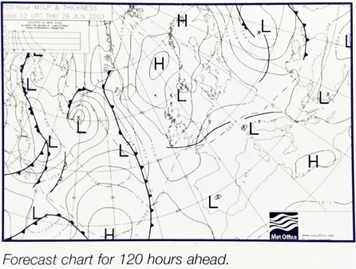

This is now the gradient wind and is the wind found above the boundary layer at around 600 metres (a height unaffected by the surface).
We now have to modify this forecast to allow for the effects of surface friction. This will vary depending on the stability of the atmosphere; here a judgment will need to be made on the air mass where youhave taken the measurement as well as on the surface concerned.
The table below shows the multiplier to be used to convert the gradient wind speed to the surface wind speed, and the amount by which the direction of the surface wind should be shifted.
| Conditions | Over sea | Over land | Speed multiplier | Degrees Backed | Speed multiplier | Degrees Backed |
|---|---|---|---|---|
| Cold clear night | 0.25 | 40 | ||
| Stable | 0.75 | 20 | 0.33 | 35 |
| Unstable | 0.90 | 10 | 0.60 | 20 |
| Average | 0.80 | 15 | 0.50 | 30 |
| Stable means the warm sector of a depression or a high pressure area. | ||||
| Unstable means the warm sector of a depression. | ||||
We now have an expected surface wind, in knots, for the marked on the weather map.
We have almost finished but not quite. On an average day, we can expect qusts og up to 1/3 as high again as the given wind speed. These can be stronger in unstable conditions around beeg showers and squalls, and less with stable conditions.
 It is unlikely that our position is exactly in between isobars, and even if it is, the systems will move. We must look at the expected winds around, how the gradient changes, and whether we will find stronger or lighter winds as we proceed.
Weather maps cover a large area and it is a good idea to verify the analysis a best as you can/ On board, this is by checking the barometer, making sure it is accurately adjusted, and by nothing the wind direction and strength. Our own observations of cloud structures will indicate where within a system we might be, and the likely air mass.
If internet access is available, you will be able to find barometer readings and weather reports from some coastal stations and airports, buoy reports, and satellite images (Chapter 14 looks at this in more detail).